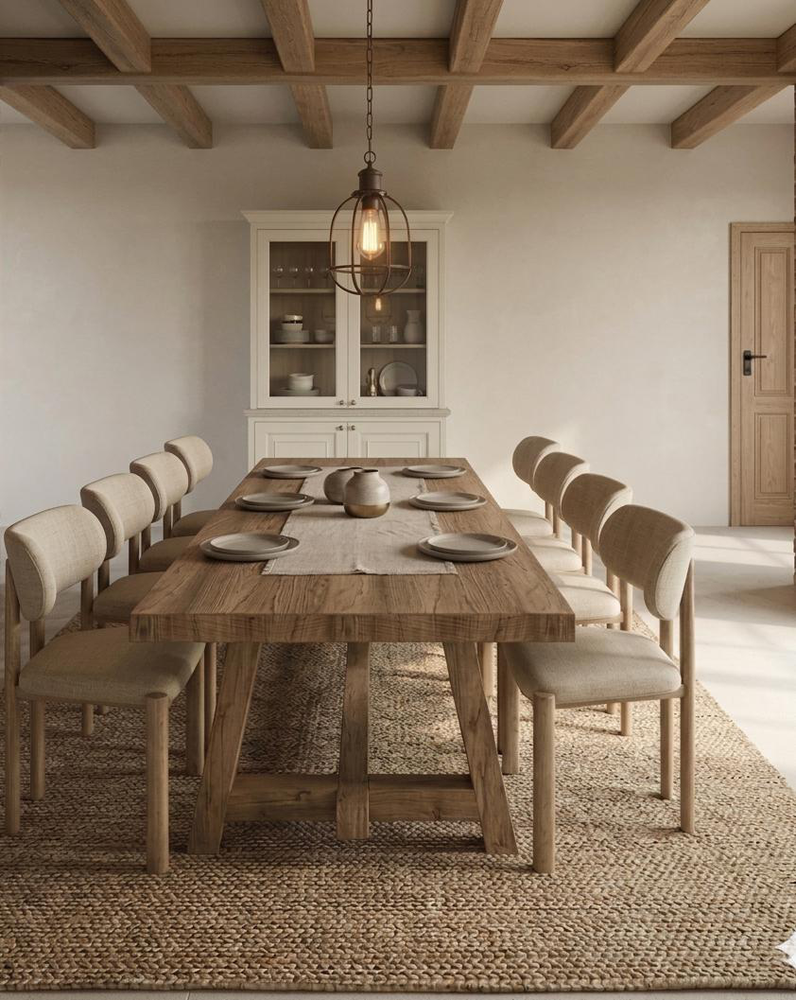
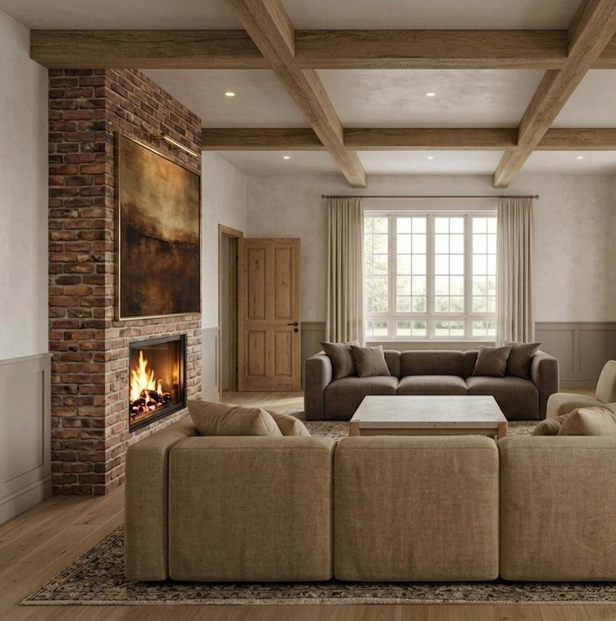
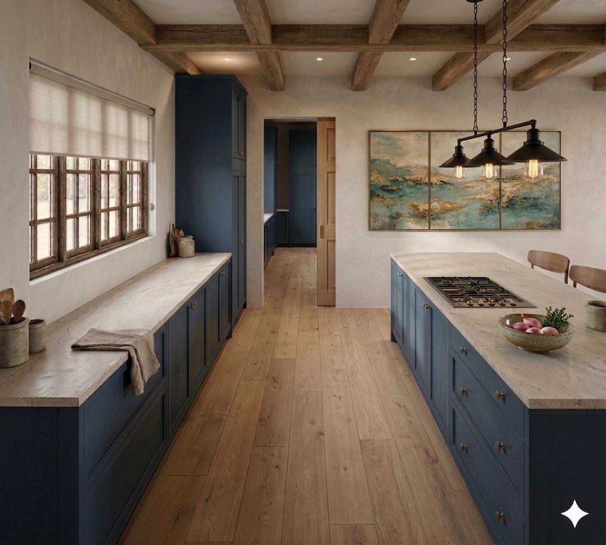
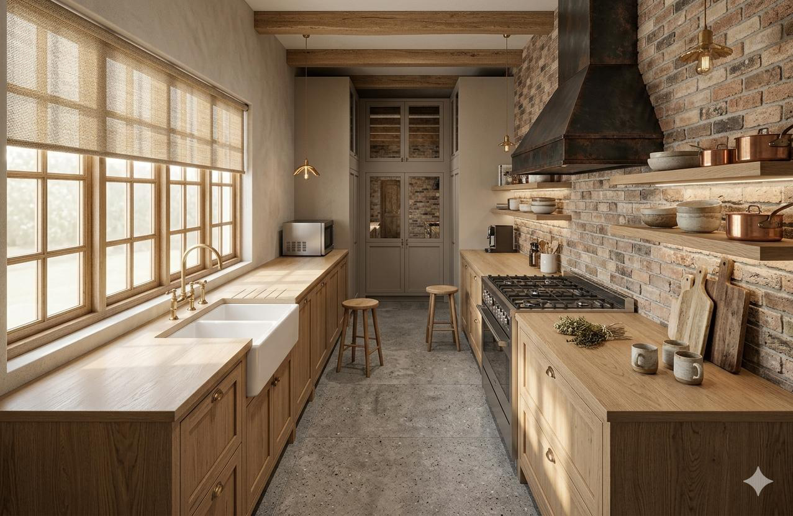
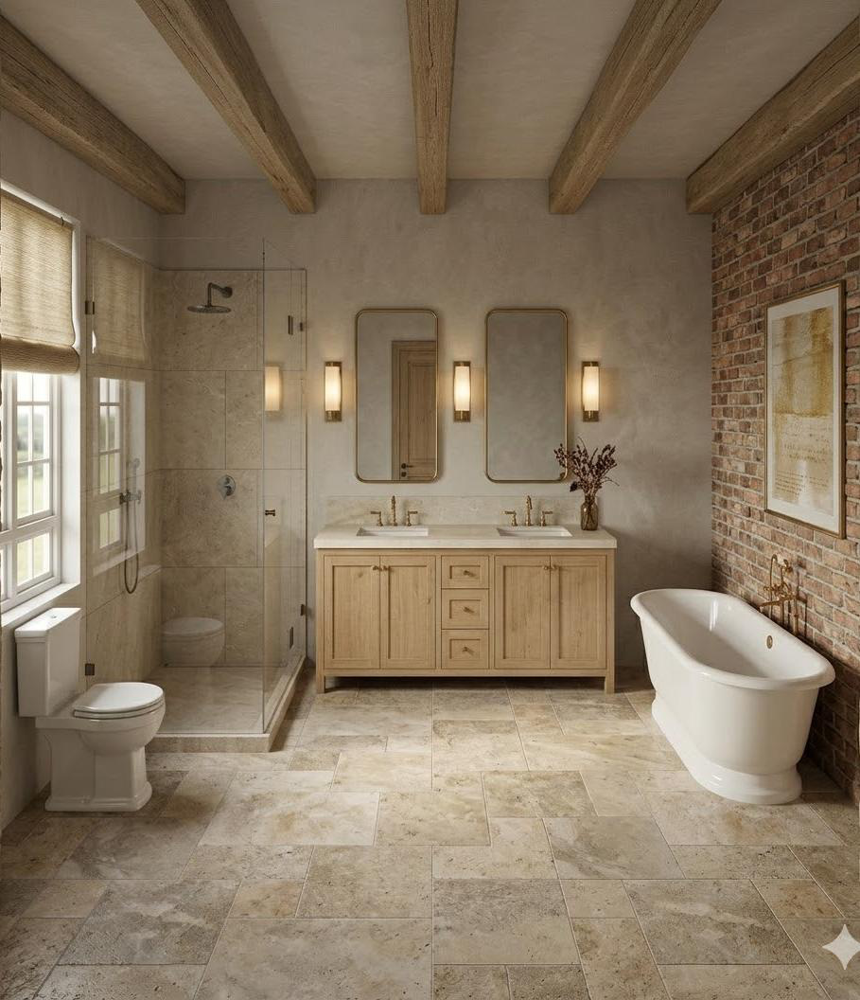
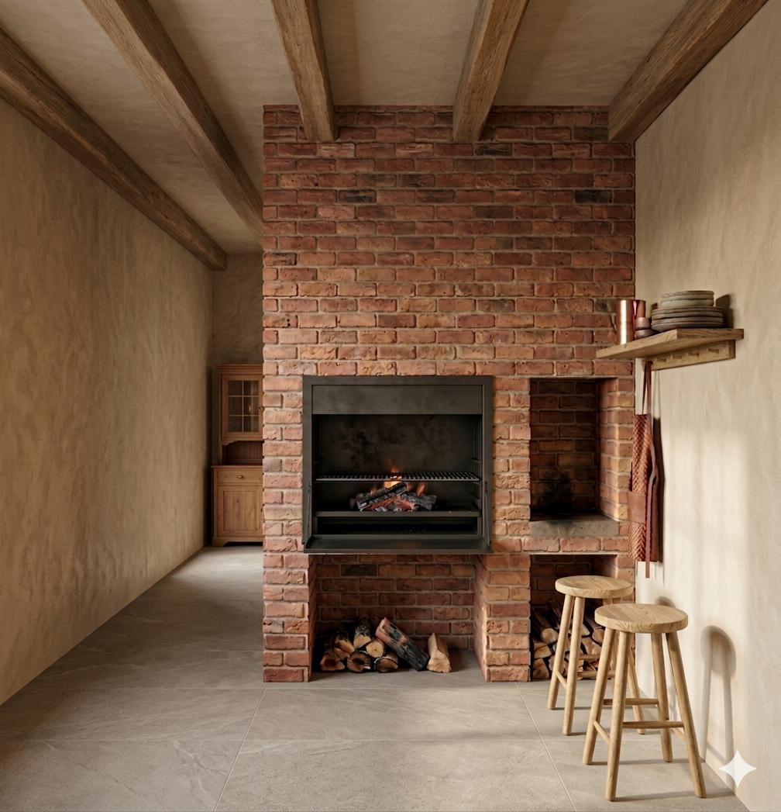
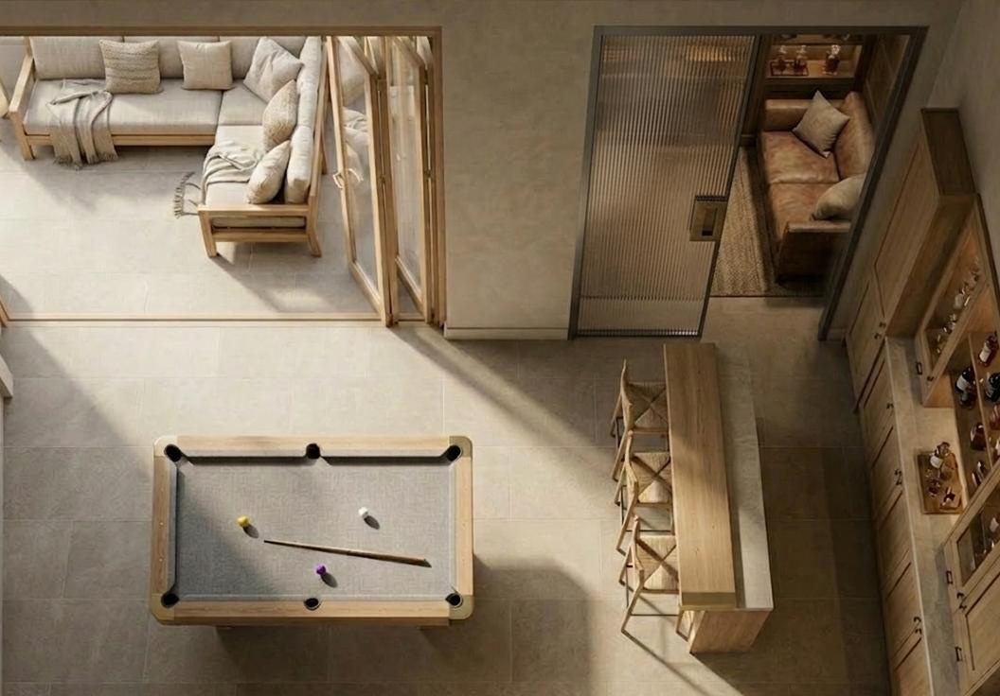

A refined modern farmhouse aesthetic shaped around landscape, function and timeless design.
The project involved the architectural and interior architectural enhancement of an existing farmhouse situated on a 6.8-hectare working farm.
Back to PortfolioDrawing inspiration from the surrounding landscape and mining character of the region, the design embraces raw natural textures, durable materials and clean architectural lines to create a refined modern farmhouse aesthetic.
The existing structure was reconfigured into a functional three-bedroom open-plan residence tailored for contemporary farm living, while still supporting the operational needs of the working farm.
The result is a cohesive architectural and interior environment that balances practicality, comfort and timeless design integrity.







